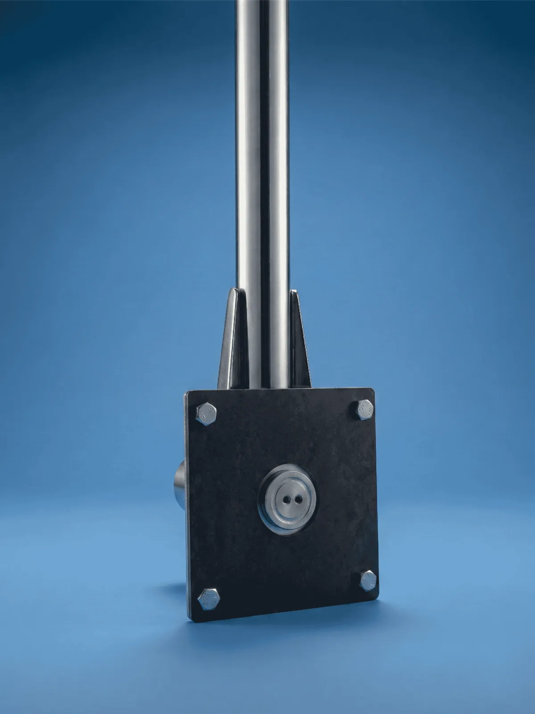
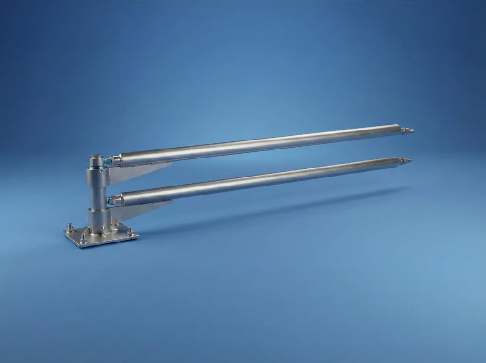

Oto Yıkama Pervanesi Boom Çiftli
Self Servis İstasyonlar İçin Boom Çiftli Pergel Sistemi
Self servis oto yıkama istasyonlarının en çok tercih ettiği boom çiftli pervane modelimiz; dayanıklılık, güvenlik ve çift fonksiyonu bir arada sunar. Boom pergel tasarımı sayesinde hortum tavandan serbest bir yay hareketi ile 360° döner; operatör aracın etrafında kolayca hareket edebilir.
Piyasadaki muadillerinden farklı olarak, hortumlara araç takılsa dahi yere düşmeyi engelleyen tam emniyetli 4 keçeli sızdırmaz sistem ile donatılmıştır. Uç kısımlardaki özel döner rekorlar, en yüksek basınç altında bile takılmadan dönebilme özelliğine sahiptir. Hem jet köpük hem de normal yıkama modlarında kesintisiz operasyon sağlar.
Öne Çıkan Özellikler:
- Boom Pergel Tasarımı: 360° serbestçe dönen krom kaplı boom kol sistemi.
- Çift Fonksiyon: Jet köpük + normal yıkama — tek boom pergelde iki hortum.
- Güvenlik: Araç takılmalarına karşı yere düşmeyi engelleyen emniyetli yapı.
- Sızdırmazlık: Uzun ömürlü kullanım sağlayan profesyonel 4 keçeli sistem.
- Döner Rekor: Yüksek basınç altında bile 360° dönebilen kaliteli uçlar.
- Krom Kaplama: Paslanmaz çelik gövde, dış mekân koşullarına tam dayanıklı.
- Self Servis Uyumlu: Tavan, direk veya duvara monte — her istasyon tipine uyar.
Kullanım Alanları
Self servis oto yıkama kabinleri, kapalı oto yıkama istasyonları ve profesyonel araç bakım merkezlerinde yoğun kullanıma uygundur. Boom çiftli pervane modeli, istasyon başına iki farklı yıkama fonksiyonu sunduğu için yatırım getirisini artırır.
Boom Çiftli Pervane Sık Sorulan Sorular
Çift fonksiyonlu self servis kabinlerde en çok sorulan seçim soruları.
Boom çiftli pervane hangi self servis istasyonlar için uygundur?
Kabin başına hem köpük hem basınçlı su hattı kullanan, işlem yoğunluğu yüksek self servis oto yıkama istasyonlarında boom çiftli pervane daha verimli sonuç verir.
Boom tekli ile boom çiftli arasındaki temel fark nedir?
Boom tekli tek hortum taşır. Boom çiftli ise aynı pergelle iki farklı hortum hattını yönetir ve köpük ile su işlemlerini tek kabinde kolaylaştırır.
Yoğun kullanıma uygun mudur?
Evet. 4 keçeli sızdırmaz sistem ve emniyetli yapı sayesinde yoğun self servis kullanımında uzun ömürlü ve güvenli çalışacak şekilde tasarlanmıştır.
Doğru Ürünü Seçmene yardımcı olabiliriz
Model seçimi ve fiyat karşılaştırmasını tek merkezden görmek için aşağıdaki sayfalara geçin.